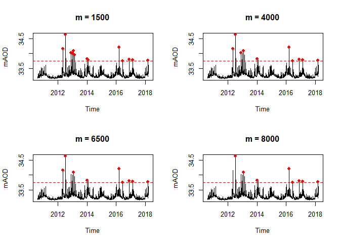
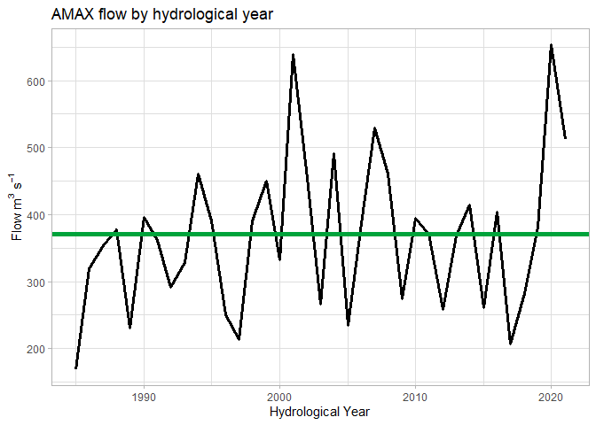
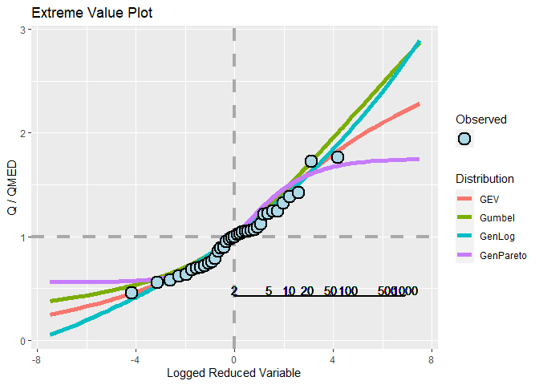

Welcome to HydroEnR!
This package is designed for members of Evidence and Risk who are developing PDM models, applications can be extended into hydrological analyses. It enables;
- Easy loading of data downloaded from WISKI
- Carry out quality checks on these data
- Preserve metadata
- Interactive visualisations
- Carry out quality checks on these data
- Aggregation of data by different periods and through various functions using rapid C++ based processes
- Rain gauge weighting
- Weighted average method
- Peak detection in hydrological data
- Various functions available
- Conversion of flow and precipitation data to a volumetric measure over a designated time step
- Derivation of Thiessen/Voronoi polygons for use in our realtime flood forecast models
- Download up-to-date meta data on EA gauges published on API
- Carry out single site analyses
- Determine baseflow from 15 minute resolution data
- Review model performance using a greater range of objective functions than what is currently available
- ARMA parameter inspection for stability in a real time forecasting context
- Loads a local version of the shiny application
Future Updates
- Basic hydraulic equations such as the Mannings’ equation
- Import cross sectional data and carry out rudimentary analyses
- Importing recent flow, stage and rain gauge data via the EAs API
- Impute missing data into PE series
- Trend detection in hydrological data
- ESS in the near future
Installation
You can install the development version of HydroEnR from GitHub with:
# install.packages("devtools")
devtools::install_github("JonPayne88/HydroEnR")Example 1 - fitting rating curves
This is a basic example which shows you how to fit a rating curve to observed data.
library(HydroEnR)
## basic example code
library(data.table)
#> Warning: package 'data.table' was built under R version 4.0.5
library(sf)
#> Warning: package 'sf' was built under R version 4.0.5
#> Linking to GEOS 3.9.1, GDAL 3.2.1, PROJ 7.2.1; sf_use_s2() is TRUE
library(leaflet)
#> Warning: package 'leaflet' was built under R version 4.0.5
library(htmltools)
library(dygraphs)
#> Warning: package 'dygraphs' was built under R version 4.0.5
# Plot raw rating data
plot(Discharge ~ Stage)
# Optimise rating with a control points at 1.6m and 2.3m
rateOptim <- rateOptimise(Discharge, Stage, control = c(1.6, 2.3))
rateOptim
#> $Meta
#> Limb lowerRange upperRange minStage maxStage minDischarge maxDischarge
#> <fctr> <num> <num> <num> <num> <num> <num>
#> 1: 1 1.08 1.60 1.085 1.600 0.547 10.2
#> 2: 2 1.60 2.30 1.601 2.296 8.390 37.3
#> 3: 3 2.30 2.69 2.307 2.689 35.300 53.2
#>
#> $Data
#> Discharge Stage Limb Range lowerRange upperRange
#> <num> <num> <fctr> <fctr> <num> <num>
#> 1: 0.547 1.103 1 [1.08,1.6] 1.08 1.60
#> 2: 0.579 1.085 1 [1.08,1.6] 1.08 1.60
#> 3: 0.589 1.088 1 [1.08,1.6] 1.08 1.60
#> 4: 0.589 1.089 1 [1.08,1.6] 1.08 1.60
#> 5: 0.593 1.089 1 [1.08,1.6] 1.08 1.60
#> ---
#> 18826: 49.300 2.629 3 (2.3,2.69] 2.30 2.69
#> 18827: 50.800 2.655 3 (2.3,2.69] 2.30 2.69
#> 18828: 51.400 2.685 3 (2.3,2.69] 2.30 2.69
#> 18829: 52.000 2.685 3 (2.3,2.69] 2.30 2.69
#> 18830: 53.200 2.689 3 (2.3,2.69] 2.30 2.69
#>
#> $`NLS Limb 1`
#> Nonlinear regression model
#> model: Discharge ~ C * (Stage + a)^n
#> data: dtl
#> C a n
#> 20.2738 -0.8566 2.5019
#> residual sum-of-squares: 873.9
#>
#> Number of iterations to convergence: 27
#> Achieved convergence tolerance: 1.49e-08
#>
#> $`NLS Limb 2`
#> Nonlinear regression model
#> model: Discharge ~ C * (Stage + a)^n
#> data: dtl
#> C a n
#> 34.597 -1.224 1.332
#> residual sum-of-squares: 1705
#>
#> Number of iterations to convergence: 38
#> Achieved convergence tolerance: 1.49e-08
#>
#> $`NLS Limb 3`
#> Nonlinear regression model
#> model: Discharge ~ C * (Stage + a)^n
#> data: dtl
#> C a n
#> 8.6308 -0.2623 2.0195
#> residual sum-of-squares: 85.17
#>
#> Number of iterations till stop: 93
#> Achieved convergence tolerance: 1.49e-08
#> Reason stopped: Number of calls to `fcn' has reached or exceeded `maxfev' == 400.
# Plot the fittings
ratingPlot(rateOptim, colours = c(2, 3, 4))
Example 2 - Peak detection
peakscpp <- findPeaksCPP(allington$mAoD, m = 4500) # C++
results <- data.table(Position = peakscpp, allington[peakscpp,])
# Returns the rows where the peaks are found
results
#> Position Time_stamp Value mAoD
#> <num> <POSc> <num> <num>
#> 1: 266986 2018-03-13 02:15:00 0.626 33.776
#> 2: 254644 2017-11-04 12:45:00 0.143 33.293
#> 3: 246204 2017-08-08 14:45:00 0.168 33.318
#> 4: 246200 2017-08-08 13:45:00 0.168 33.318
#> 5: 238258 2017-05-17 20:15:00 0.214 33.364
#> 6: 229531 2017-02-15 22:30:00 0.644 33.794
#> 7: 221262 2016-11-21 19:15:00 0.650 33.800
#> 8: 213018 2016-08-27 22:15:00 0.144 33.294
#> 9: 213016 2016-08-27 21:45:00 0.144 33.294
#> 10: 205914 2016-06-14 22:15:00 0.605 33.755
#> 11: 196564 2016-03-09 12:45:00 1.062 34.212
#> 12: 190623 2016-01-07 15:30:00 0.540 33.690
#> 13: 177591 2015-08-24 21:30:00 0.227 33.377
#> 14: 170610 2015-06-13 04:15:00 0.173 33.323
#> 15: 160023 2015-02-22 21:30:00 0.344 33.494
#> 16: 160019 2015-02-22 20:30:00 0.344 33.494
#> 17: 153056 2014-12-12 07:45:00 0.470 33.620
#> 18: 153054 2014-12-12 07:15:00 0.470 33.620
#> 19: 141192 2014-08-10 17:45:00 0.206 33.356
#> 20: 134072 2014-05-28 13:45:00 0.430 33.580
#> 21: 134071 2014-05-28 13:30:00 0.430 33.580
#> 22: 120403 2014-01-06 04:30:00 0.665 33.815
#> 23: 113712 2013-10-28 11:45:00 0.501 33.651
#> 24: 104444 2013-07-23 22:45:00 0.360 33.510
#> 25: 87369 2013-01-27 02:00:00 0.946 34.096
#> 26: 81345 2012-11-25 08:00:00 0.874 34.024
#> 27: 67739 2012-07-06 14:30:00 1.476 34.626
#> 28: 67738 2012-07-06 14:15:00 1.476 34.626
#> 29: 61218 2012-04-29 16:15:00 1.013 34.163
#> 30: 53961 2012-02-14 02:00:00 0.137 33.287
#> 31: 53953 2012-02-14 00:00:00 0.137 33.287
#> 32: 53951 2012-02-13 23:30:00 0.137 33.287
#> 33: 37525 2011-08-26 21:00:00 0.139 33.289
#> 34: 37523 2011-08-26 20:30:00 0.139 33.289
#> 35: 37521 2011-08-26 20:00:00 0.139 33.289
#> 36: 26910 2011-05-08 07:15:00 0.149 33.299
#> 37: 20100 2011-02-26 08:45:00 0.475 33.625
#> 38: 20098 2011-02-26 08:15:00 0.475 33.625
#> 39: 20097 2011-02-26 08:00:00 0.475 33.625
#> 40: 9598 2010-11-08 23:15:00 0.385 33.535
#> 41: 9596 2010-11-08 22:45:00 0.385 33.535
#> Position Time_stamp Value mAoD
# Plot all points
plot(allington$Time_stamp, allington$mAoD,
type = 'l',
main = paste0('Peak detection where m = 4500'),
xlab = 'Time',
ylab = 'mAOD')
points(results$Time_stamp, results$mAoD, col = 'red', pch = 19)
# Integrate into loops
# Decide window over which to detect peaks
m <- c(1500, 4000, 6500, 8000)
# Include a threshold to filter results
threshold <- 33.75
# Change plot window too enable 4 plots 2x2
par(mfrow = c(2, 2))
# Loop through the m values
for(i in seq_along(m)){
p <- HydroEnR:::findPeaksCPP(allington$mAoD, m = m[i])
results <- data.frame(Position = p, allington[p,])
results_filter <- dplyr::filter(results, mAoD >= threshold)
plot(allington$Time_stamp,
allington$mAoD,
type = 'l',
main = paste0('m = ', m[i]),
xlab = 'Time',
ylab = 'mAOD')
points(results_filter$Time_stamp, results_filter$mAoD, col = 'red', pch = 19)
abline(h = threshold, col = 'red', lty = 2)
}
Example 3 - Single site analysis
#> Importing meta data
#> Importing precipitation data
#> Removing blank elements at top
#> Converting dates and times
# Monthplot of the Buildwas flow data
monthPlot(buildwas, name = 'Buildwas', polar = FALSE)
# Retrieve the AMAX series
getAMAX(buildwas)
#> Year AMAX
#> <num> <num>
#> 1: 1985 169
#> 2: 1986 319
#> 3: 1987 353
#> 4: 1988 378
#> 5: 1989 230
#> 6: 1990 396
#> 7: 1991 362
#> 8: 1992 291
#> 9: 1993 329
#> 10: 1994 461
#> 11: 1995 391
#> 12: 1996 251
#> 13: 1997 214
#> 14: 1998 390
#> 15: 1999 450
#> 16: 2000 333
#> 17: 2001 639
#> 18: 2002 454
#> 19: 2003 266
#> 20: 2004 491
#> 21: 2005 235
#> 22: 2006 387
#> 23: 2007 529
#> 24: 2008 461
#> 25: 2009 274
#> 26: 2010 394
#> 27: 2011 371
#> 28: 2012 259
#> 29: 2013 368
#> 30: 2014 415
#> 31: 2015 261
#> 32: 2016 404
#> 33: 2017 207
#> 34: 2018 282
#> 35: 2019 381
#> 36: 2020 653
#> 37: 2021 512
#> Year AMAX
# QMED plots
# Can be stored in the environment
# Greater adaptability for users
plotQMED(buildwas)
#> [1] Estimated QMED: 371 cumecs
# Retrieve the l-moments
Ls(buildwas)
#> L1 L2 L3 L4 LCV LCA LKUR LSkew
#> 1 366.4865 63.28078 5.862162 9.22462 0.1726688 0.09263732 0.1457728 0.09263732
#> QMED
#> 1 371
# Extreme value plot for buildwas
plotExtVal(buildwas)